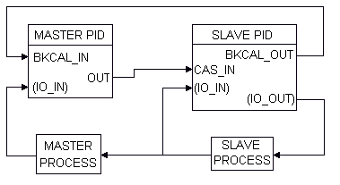
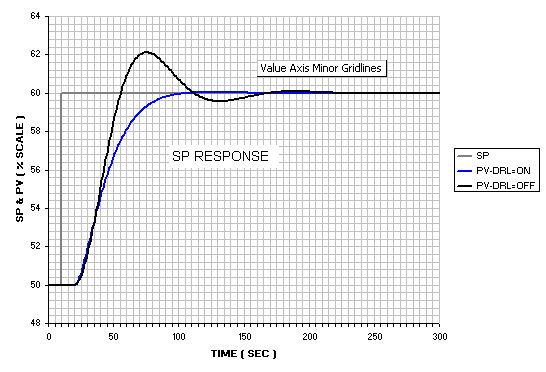
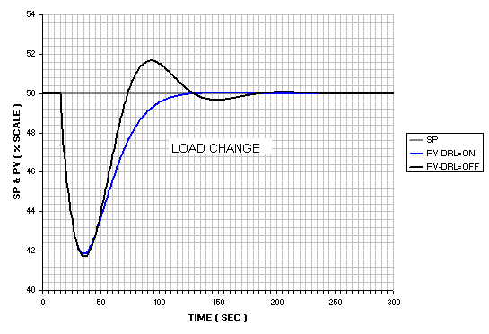

PID function block application information
The PID function block is a powerful, flexible control algorithm that is designed to work properly in a variety of control strategies. The PID block is configured differently for different applications. The following examples describe how to use the PID block for closed loop control: basic PID loop, feedforward control, cascade control with master and slave, complex cascade control with override, and PID control with tracking.
Closed loop control
Implement basic closed loop control by taking the error difference between the setpoint (SP) and the process variable (PV) and calculating a control output signal using a PID (Proportional Integral Derivative) function block.
Proportional control responds immediately and directly to a change in the PV or SP. The proportional term (GAIN) applies a change in the loop output based on the current magnitude of the error. With only the proportional term (GAIN), the control loop will likely have a steady state error.
Integral control eliminates steady state error. It integrates the error until it is negligible. The integral term (RESET) applies a correction based on the magnitude and duration of the error. Lowering RESET increases integral action.
The derivative term (RATE) applies a correction based on the rate of change of error. Use derivative control where large measurement lags exist, which is typically temperature control.
The MODE parameter is a switch that indicates the target and actual mode of operation. Mode selection has a large impact on the operation of the PID block.
Application example: Basic PID block for steam heater control
A process fluid is heated by steam in a heat exchanger, as in the following example:
In this example, the PID controller accepts the heated fluid temperatures as an input and provides a signal to the AO block, which sends the control signal to the steam feed valve.
You can configure the PID function block by referencing the I/O directly and not using AI and AO function blocks. In this case, I/O channels are addressed with the parameters IO_IN and IO_OUT. Status information is communicated to the block when you define the card and channel parameters. The BKCAL communication between the PID and AO blocks is a necessary part of this example. The advanced topics section has information on BKCAL communications.
Application example: Feedforward control
In the above example, control problems can arise because of a time delay caused by thermal inertia between the two flow streams. If, for example, steam flow declines, it can take some time for this disturbance to cause a drop in the heated fluid's temperature.
Control can be improved by measuring this disturbance and reacting to it before it manifests itself at the temperature transmitter. In the following figure, steam flow is measured (FT). A feedforward signal is sent to the controller to augment the signal to the valve if flow drops or to lower this signal if steam flow rises. (This applies to a configuration where the higher the signal, the greater the valve opening.)
In this steam heater system, adding feedforward control improves the process outlet temperature response. The inlet steam flow is input to an AI function block and is connected to the FF_VAL connector on the PID block. Enable feedforward control (FF_ENABLE), scale the feedforward value (FF_SCALE), and apply a gain determined by tuning (FF_GAIN). The following figure shows the process and function block configuration for feedforward control:
Application example: Cascade control with master and slave loops
The feedforward scheme in the above example requires that some correlation be predetermined between steam flow changes and the steam valve opening adjustments they make. Another way to deal with the time delay problem is to use cascaded controllers. This approach does not require finding a correlation between steam flow changes and their steam valve opening adjustments. In the cascade loop in the following figure, the output from the master temperature loop is used as the setpoint for the slave steam flow loop. The following diagram shows the process instrumentation for this example:
The cascaded blocks shown can all be installed in a single module. Another method of configuring function blocks for this example is to put the temperature AI block and the master loop PID block in one module. The flow, slave PID block, and AO block are in a second module. Select this method when you want to reference faceplates and alarms separately.
In the PID function block, BYPASS is used when the control function block is a slave block in a cascade. If a transmitter failure or some other problem occurs that causes the slave controller to see a Bad input signal, BYPASS can be activated so that the signal coming from the master controller passes through the slave to the field. In this manner, the loop still has some control; however, dynamic performance will suffer because a cascaded loop has effectively been replaced with a single PID.
Application example: Cascade control with override
You might need override with cascaded PIDs. The Control Selector and Enhanced Control Selector function blocks have information on using override control.
Cascaded blocks use BKCAL_IN and BKCAL_OUT to pass statuses during cascade initialization and in limited states. The advanced topics section has information on BKCAL communications.
Application example: PID control with tracking
An example where tracking is useful is a process operating outside of its normal operating range (for example, during a process startup).
In the following figure, a flow control valve is used to regulate the flow rate supplied by a pump. When the pump is started, the output flow from the pump is low for a short period while the pump is coming up to speed. The flow control valve and controller do not operate effectively at this low flow.
Tracking can be used in this situation to set the valve at a predetermined opening for a given amount of time. The signal to start the pump is also directed through a timed pulse block to turn tracking on for the time duration specified in the timed pulse block. The tracking value is set at the needed valve opening. When the pump starts, tracking starts. The valve opens to the specified value for the duration of the timed pulse. At the end of the pulse, tracking is turned off, and the PID can initiate its normal control, regulating the valve to adjust the output flow.
Application example: Error-squared proportional only control applied to integrating process
A PID block, configured for proportional only control, is applied to a liquid level (for example, a surge tank level control might be performed this way).
Use Nonlinear Gain Modification in FRSIPID_OPTS is selected.
Gain=2; Reset=0; Rate=0; NL_GAP=0; NL_HYST=0; NL_TBAND=50; NL_MINMOD=0. This set of tuning parameters provides an error-squared output with a maximum gain of 2.
Starting balanced at 50% of scale (BIAS=50%), a load disturbance equivalent to 25% of OUT_SCALE is introduced.
Application example: PID with deadband, transition Band, and hysteresis
A self-regulating process is controlled with a PID configured for deadband, hysteresis and transition band. The block diagram of the loop is identical to that for the previous example. Tuning parameters are: NL_MINMOD=0; NL_GAP=2; NL_HYST=3; NL_TBAND=3; GAIN=2; RESET=7.5; RATE=0.
A disturbance equivalent to 25% of OUTSCALE is introduced at the process input. Until the error exceeds 5 (NL_GAP + NL_HYST), the output remains constant. Once the controller begins adjusting its output it continues to adjust until the error is brought to a value less than NL_GAP, at which point the output is held constant.
Application example: Dynamic reset limiting in primary of a cascade
Two PID blocks are configured in a cascade control configuration. The MASTER PID is tuned for load response to approximately the best IAE (Integrated Absolute Error), without FRSIPID_OPTS Dynamic Reset Limit (DRL) option selected. The MASTER PID is then tuned to give the identical IAE with the Dynamic Reset Limit option selected. The response for SP and load responses are compared: Note that in this example the MASTER is using identical RESET and RATE, but in the case where the Dynamic Reset Limit option is selected the GAIN parameter is adjusted to about 1.6 the value applied in the case when option is not selected.

Dynamic reset limiting in primary of a cascade


From the above plots it is apparent that master response is altered significantly by the use of Dynamic Reset Limit. The response difference illustrated is typical. The tendency to overshoot is much reduced.
Both the MASTER and SLAVE processes are then modified by doubling the dead time in both.
When the Dynamic Reset Limit option is selected the responses are maintained at an acceptable level of performance, even though the GAIN in that case is higher. Not only does Dynamic Reset Limit (or dynamic external reset) provide reset limiting in cases of limit violations, it also reduces the sensitivity of the control loop to changes in slave performance and stability, while providing much higher stability margins in the MASTER.
Reset contribution under limited conditions
The following example illustrates the dynamic response of the PID block when it is limited by the output limits compared to the response when the output is limited by a downstream block. In the first case, a step change in the feedforward input forces the calculated PID output to exceed the PID output limit.
Depending on the length of time FF_VAL's step change is held (30% in the figure), when it is changed back to 0% the OUT value returns to a value less than 50%.
In the second case, the change in feedforward input causes a change that exceeds the setpoint limit in a downstream block.
However, if only the portion of FF_VAL that forces the OUT value to saturation has an impact on the process, then the reset contribution should not change and the OUT value should return to its original value when FF_VAL changes back to its initial value. This behavior can be achieved by setting the PID output limits outside the value needed to trigger a limit condition in the downstream block. In the second case, the PID output limits are increased so that the change in the feedforward input causes the setpoint of the downstream block to be limited, resulting in the BKCAL_IN having limit status.
For example, the PID OUT_HI_LIM may be 100 and the AO block SP_HI_LIM is set to the 70% limit. If SP_HI_LIM is reached, the AO block BKCAL_OUT status becomes Limited which prevents changes to the PID reset from forcing OUT further past the limit. When a 30% FF_VAL is applied and removed to this module, it behaves as shown in the following figure.